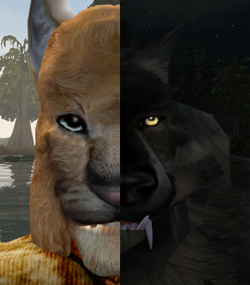

Volk_Milit
(aka Ja'Virr-Dar)
|
Khajiit, gamer, programmer, geek. Nah, too many junk emails, so use social network. But I still hate them. |
 |
Ja - Bachelor, young adult
Virr - Just second name means nothing, like Ra'Virr. Actually I just stole that Virr from him ;)
Dar - Thief, clever
[uesp.net]

My old(ish) screenshot. Kinda like it.